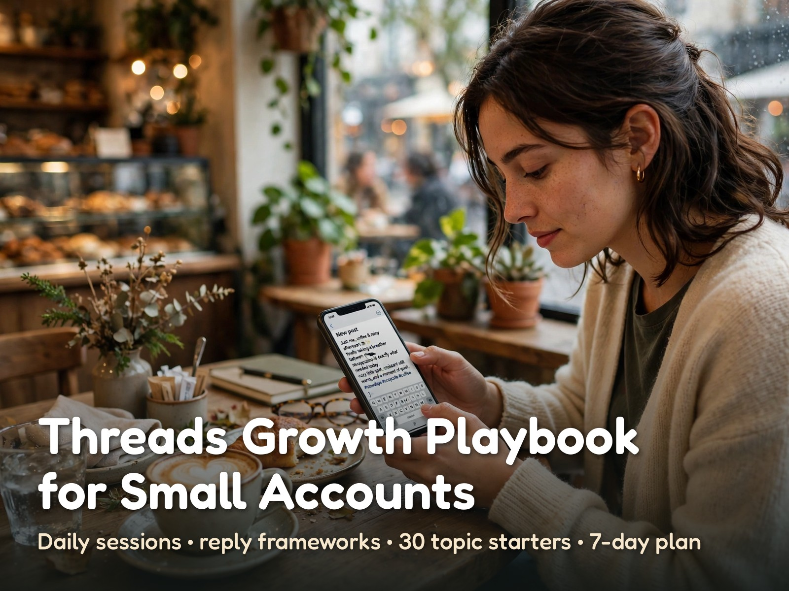

$9 USD — instant download
Threads Growth Playbook for Small Accounts — Daily Sessions, Reply Frameworks, 30 Topic Starters & 7-Day Starter Plan
Get it on GumroadYour posts are not the problem — the empty room is. Small Threads accounts usually die from randomness (posting whatever, whenever) and silence (good posts landing where nobody sees them). This 22-page playbook fixes both with a routine instead of a trick: three short sessions a day, replies that actually add something, and pacing rules that keep your account safe.
Morning, midday and evening sessions each have exact jobs, so a day of Threads activity takes minutes, not doom-scrolling. A pacing table shows how long to wait between posts and replies so you never look like a bot, and the profile chapter gives you the five-second check your profile must pass, three bio formulas with examples, and an introduction-post formula you can pin today. The system is deliberately sustainable: it is designed for real small accounts to keep up for months, not for one heroic week.
The reply strategy chapter covers targeting rules for where to reply, the three rules of a reply that earns a follow, and five reply frameworks with worked examples — plus a weak-versus-strong reply clinic that shows the difference on the page. The posting chapter adds six post types that work for small accounts, a bank of 30 topic starters and ten first-line openers, so a session never starts from a blank compose box.
A full section covers pacing, safety and what not to do: warning signs that mean stop for the day, and the never list — no bought followers, no follow/unfollow churn, no copied posts. The 7-day starter plan sequences your first week, and a closing chapter shows how to read your numbers without lying to yourself. The playbook guarantees no follower count and no income; what it gives you is a fair, rule-abiding routine that compounds.
This is a digital download — no physical item will be shipped. For personal use; please do not redistribute or resell the file.